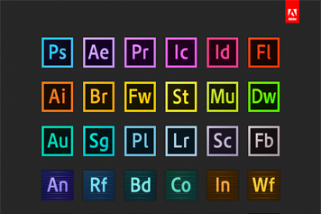
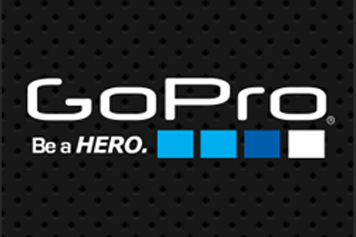

AFTER EFFECT为我们提供特效支持，它是一套动态图形的设计工具和特效合成软件。主要应用于Motion Graphic设计、媒体包装和VFX（视觉特效）。借助AE成熟的运动追踪技术和实用的抠像技术，我们才得以使我们的电影画面更具视觉震撼力。
PREMERE PRO为我们提供素材剪辑支持，用以创作流畅的镜头切换及转场效果，它的高效集成，使我们足以完成在编辑、制作、工作流上遇到的所有挑战，满足我们创建高质量作品的要求 。
其他ADOBE软件都在CHOSER STUDIO的创作过程中有一定应用。

3Ds Max是一款专门为建筑师、设计师以及可视化专业人士而量身定制的 3D应用软件。Autodesk 3ds Max提供了新的渲染功能、增强了与包括 Revit 软件在内的行业标准产品之间的互通性，以及更多的节省大量时间的动画和制图工作流工具。

红巨星系列套装尤其是调色套装（Color Suit）为我们提供了强大的AE插件调色支持，这是一款专业的颜色矫正插件，其中包含Looks，Colorista,Denoiser,Cosmo,Mojo等插件对我们美化素材，提高素材质量有极大帮助。

AVCHD是索尼(Sony)公司与松下电器(Panasonic)於2006年5月联合发表的高画质光碟压缩技术，AVCHD标准基於MPEG-4 AVC/H.264视讯编码，支援480i、720p、1080i、1080p等格式，同时支援杜比数位5.1声道AC-3或线性PCM 7.1声道音频压缩。

GoPro相机是一款小型可携带固定式防水防震相机。GoPro的相机现已被冲浪、滑雪、极限自行车及跳伞等极限运动团体广泛运用，因而“GoPro”也几乎成为“极限运动专用相机”的代名词。
GoPro的超小体积和最高支持4K超高分辨率摄像的性能使我们能够既将它作为拍摄道具使用，也可作为第二机位使用。
CHOSER STUIDIO采用搭载Microsoft Windows 10的计算机设备进行工作，同时有能够开启CUDA加速的Nvida Geforce GTX 900系列显卡的渲染支持。
同时由Intel和AMD搭建的平台所发挥的作用也很大